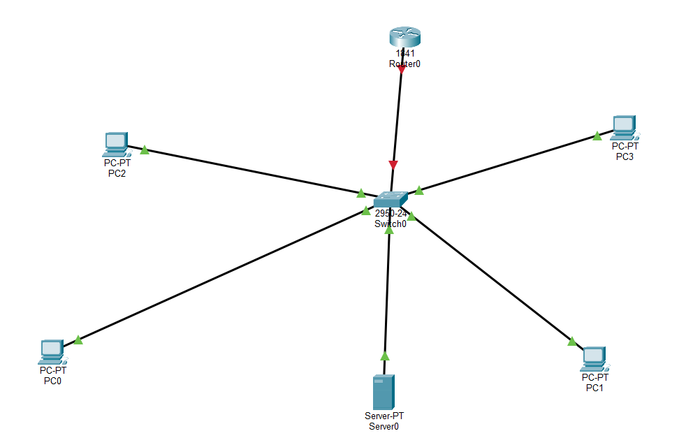
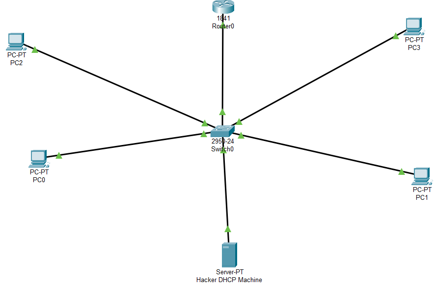
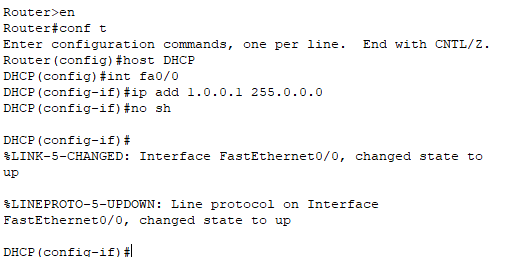
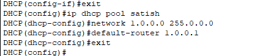
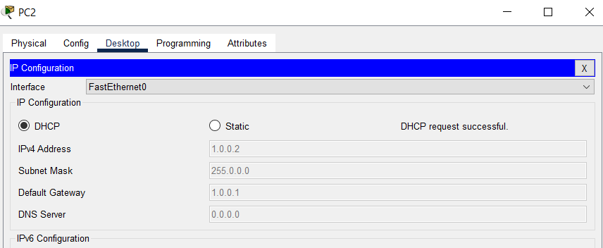
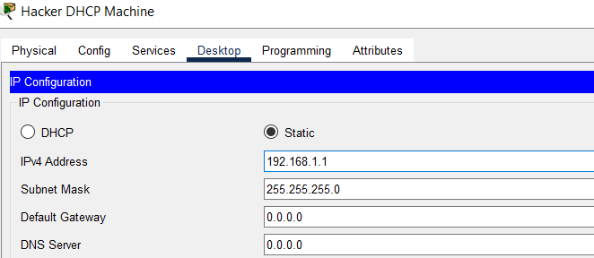
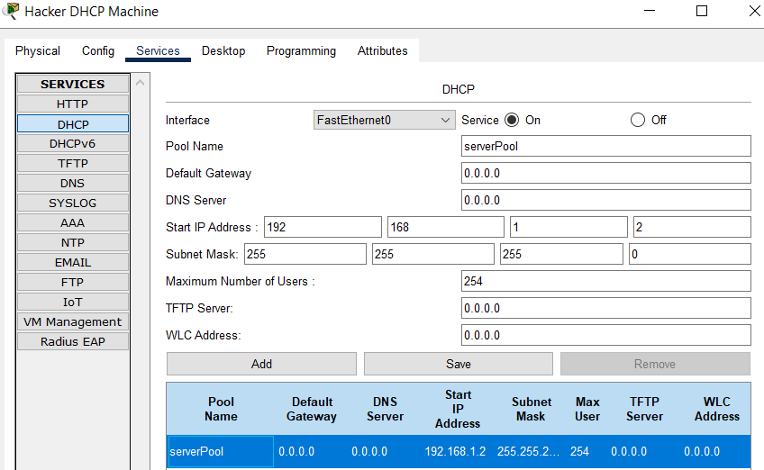
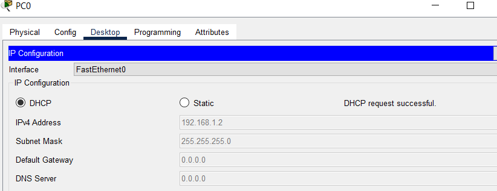
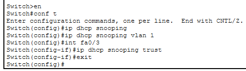
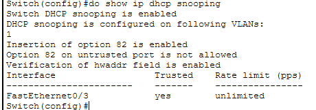

DHCP Snooping — Neutraliser un Serveur DHCP Pirate
Réseau · Sécurité L2 · Cisco Packet Tracer · DHCP Spoofing · DHCP Snooping · Ports Trust/Untrust
Le protocole DHCP repose entièrement sur la confiance : un client diffuse une requête en broadcast sur tout le segment, et répond au premier serveur qui lui propose une adresse sans jamais vérifier si ce serveur est légitime. Un attaquant qui branche un serveur DHCP pirate sur le même réseau peut donc détourner silencieusement les postes clients : leur imposer une fausse passerelle, un faux DNS, et se positionner en homme du milieu sur tout leur trafic. Ce lab démontre d'abord cette attaque avec succès, puis la neutralise avec la fonctionnalité DHCP Snooping du commutateur, qui filtre les réponses DHCP en fonction de la confiance accordée à chaque port.
Environnement
Serveur légitime Router0 (1841)
Pool légitime 1.0.0.0/8
Serveur pirate Server-PT « Hacker DHCP »
Pool pirate 192.168.1.0/24
Port de confiance Fa0/3 (vers Router0)
Topologie
Un switch central relie Router0 (qui fera office de serveur DHCP légitime) et quatre postes clients (PC0 à PC3). Un cinquième équipement, Server0, est branché sur le même switch, il sera reconfiguré au fil du lab en « Hacker DHCP Machine », le serveur DHCP pirate.


Étape 1 : Démonstration de l'Attaque (Rogue DHCP Server)
Mise en place du serveur DHCP légitime
Router0 est renommé DHCP et reçoit une adresse sur son interface FastEthernet0/0 (1.0.0.1/8), qui servira de passerelle par défaut pour le pool.

Un pool DHCP est ensuite créé (ip dhcp pool satish), couvrant le réseau 1.0.0.0/8 avec 1.0.0.1 comme passerelle par défaut.

Résultat : les postes récupèrent bien leur adresse depuis Router0, PC2 obtient 1.0.0.2 avec la passerelle 1.0.0.1, comportement normal et attendu.

Mise en place du serveur DHCP pirate
Le « Hacker DHCP Machine » reçoit une IP statique sur un tout autre sous-réseau (192.168.1.1/24), sa propre adresse n'a pas besoin d'être dans la même plage que celle qu'il va distribuer, DHCP fonctionnant par diffusion sur le segment local.

Son propre service DHCP est activé avec un pool concurrent (serverPool), distribuant des adresses à partir de 192.168.1.2.

Résultat : sans aucune protection sur le switch, PC0 obtient désormais son adresse depuis le serveur pirate (192.168.1.2) au lieu de Router0, la preuve que l'attaque fonctionne. Un attaquant en position de sniffer ou de proxy pourrait dès lors intercepter tout le trafic de ce poste en s'étant imposé comme passerelle.

Constat : aucun mécanisme natif d'Ethernet ou de DHCP n'empêche un équipement quelconque branché sur le réseau de répondre aux requêtes DHCP. La seule défense possible se situe au niveau du commutateur, qui doit décider lui-même quels ports ont le droit de faire transiter des réponses de serveur DHCP.
Étape 2 : Protection via DHCP Snooping sur le Switch
Le DHCP Snooping fait la distinction entre ports trusted (autorisés à relayer des réponses de serveur DHCP typiquement le port menant vers le serveur légitime ou un routeur) et untrusted (tous les autres par défaut, y compris celui du poste pirate). Toute trame DHCP OFFER ou ACK reçue sur un port untrusted est automatiquement rejetée par le switch, quelle que soit sa légitimité apparente.
La fonctionnalité est activée globalement, puis restreinte au VLAN 1, et le port Fa0/3, celui qui relie le switch à Router0, le serveur légitime est explicitement déclaré trust.

La commande show ip dhcp snooping confirme la configuration effective : snooping actif sur le VLAN 1, insertion de l'option 82 activée, vérification du champ hwaddr activée, et Fa0/3 listé comme seul port de confiance (sans limite de débit).

Bilan : une fois cette configuration en place, toute réponse DHCP émise depuis le port du « Hacker DHCP Machine » un port untrusted par défaut sera automatiquement filtrée par le switch, quelle que soit la rapidité ou l'insistance du serveur pirate à répondre. Seules les réponses transitant par Fa0/3 (Router0, le serveur légitime) resteront acceptées. Ce lab n'a pas rejoué l'attaque après activation du snooping pour reconfirmer visuellement le blocage, mais le mécanisme de filtrage au niveau du port, indépendant du contenu du paquet DHCP est celui documenté par Cisco et validé par la sortie de show ip dhcp snooping. Une amélioration naturelle du lab serait de relancer exactement le même test qu'à l'étape 1 pour observer le rejet en direct.